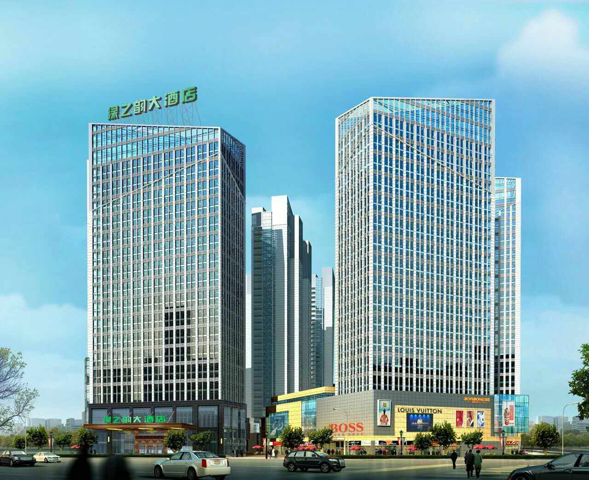

绿之韵大酒店
地址：湘潭雨湖区九华经济开发区学府路1号新都汇一号楼
联系方式：陈女士 13347325191
- 路线一：长沙黄花机场 ——湘潭绿之韵大酒店
- 路线二：长沙南站（高铁站）——湘潭绿之韵大酒店
- 路线三：湘潭北站（高铁站）——湘潭绿之韵大酒店
- 路线四：湘潭火车站——湘潭绿之韵大酒店
- 路线五：长沙火车站——湘潭绿之韵大酒店
- 路线六：株洲西站（高铁站）——湘潭绿之韵大酒店
- 路线七：株洲火车站——湘潭绿之韵大酒店
- 路线八：湘潭绿之韵大酒店——湖南科技大学
机场大巴：乘坐黄花机场快线（湘潭线）至湘潭九华管委会（1小时一趟，票价41元，08:30—20:30），然后步行400米至绿之韵大酒店。全程约41元，耗时1.5小时。 磁悬浮（体验线路）：黄花机场乘坐磁悬浮列车至长沙南站（15分钟一趟，票价20元，07:00—21:00），长沙南站至湘潭绿之韵大酒店请参考线路1。全程约50元，耗时1.5小时。 的士（推荐滴滴打车）：全程约160元，耗时1小时。
高铁（推荐）：长沙南站乘坐高铁至湘潭北站（G2111、G2115、G6407、G2103、G1531、G1421、G6487、G1373、G1397、G285、G2335等，耗时14分钟，票价12元，07:00-20:30），湘潭北站至绿之韵大酒店请参考线路3。全程约30元，耗时40分钟。 的士（推荐滴滴打车）：全程约120元，耗时50分钟。
的士（推荐滴滴打车）：全程约20元，耗时15分钟。 公交：乘坐公交101路，或者126路，或者28路，至红旗社区站下车，步行480米到达会场，全程2元，耗时35分钟。
的士（推荐滴滴打车）：全程约10元，耗时10分钟。 公交：乘坐公交127路，或者河西综保区专线，至红旗社区站下车，步行280米到达会场。
城际铁路：长沙火车站（城际铁路站）乘坐城际铁路至湘潭火车站（C6907、C6969、C6971、C6957、C6973、C6959、C6977等，耗时40分钟，票价25元，07:00-21:30），湘潭站至绿之韵大酒店请参考线路4，全程约40元，耗时1小时。 的士：全程约120元，耗时1小时。
的士（推荐滴滴打车）：全程约90元，耗时40分钟。
的士（推荐滴滴打车）：全程约100元，耗时1小时。
的士（推荐滴滴打车）：全程约8元，耗时6分钟。 步行：耗时22分钟。